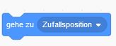

Schritt F5: Zufällige Punkte einsammeln
Bisher können wir Peckmähn zwar bewegen, aber ein Spiel ist das noch nicht! Unser Ziel ist es nun, einen Punkt an einer zufälligen Stelle erscheinen zu lassen und ihn an eine andere zufällige Stelle zu verschieben, sobald Peckmähn ihn beürhrt.
Versuche das Verhalten aus dem Video nachzubauen! Einige Blöcke dazu brauchtest du bisher nicht, diese musst du selbst finden!
Tipp?

Tipp??

Doch eine Anleitung?
Die Sachen, die bisher in diesem Kasten standen, waren wortgleich mit der leichteren Version. Wenn du bisher öfter hier drauf klicken musstest, kannst du
Hier klicken zur leichteren Version. Das ist keine Schande! Wenns doch zu langweilig wird kannst du oben wieder zurückschalten.